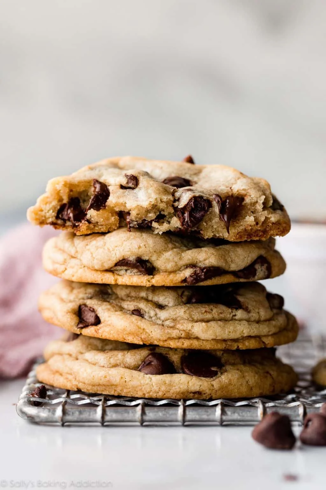

Hello, welcome to my life.
I will share about my story here. My name is Nurul Eyman Elysa.
I am 20 years old . I am persuing my Diploma in UiTM Kedah and currently in sem 5 which is my last sem. I have 4 sibling and im the youngest one.
I love singing and cooking. Here is the recipe of my favourite cookies:
<|--this is where i put the recipe -->
cookies

Bahan-bahan
- chocolate chips
- cornstarch
- salt
- baking soda
- melted butter
- vanilla
- brown&white sugar
- egg yolk
- flour
Bahan Untuk Tumbuk Kasar
- 3 ulas bawang meraha
- 3 ulas bawan putiha
- 6 biji cili padia